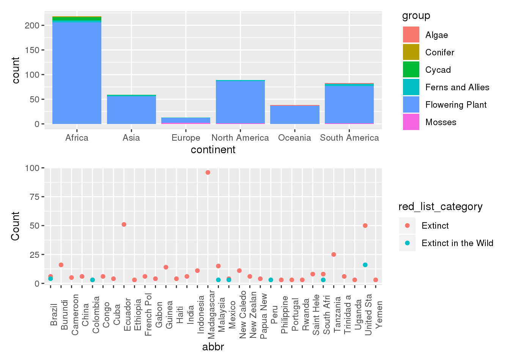
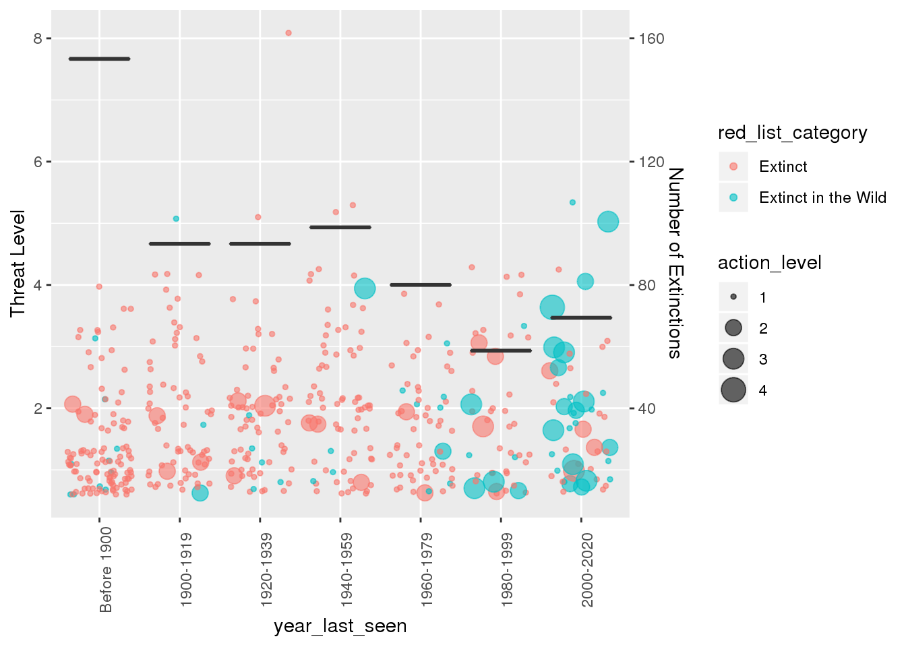
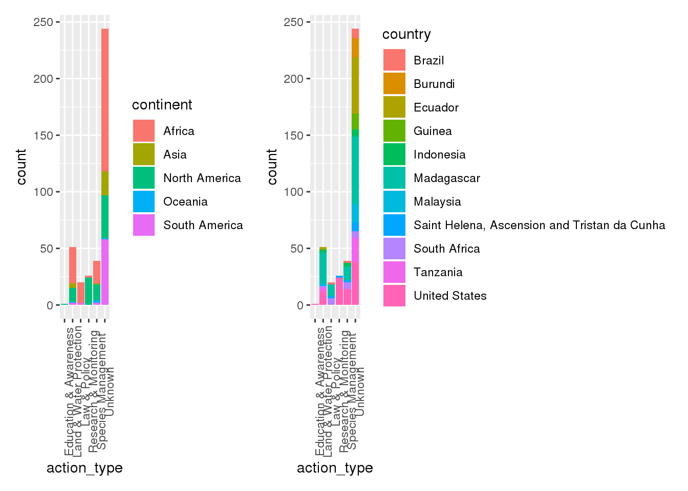

library(ggplot2)
library(dplyr)##
## Attaching package: 'dplyr'## The following objects are masked from 'package:stats':
##
## filter, lag## The following objects are masked from 'package:base':
##
## intersect, setdiff, setequal, unionlibrary(stringr)
library(tidyverse)## ── Attaching packages ─────────────────────────────────────── tidyverse 1.3.0 ──## ✓ tibble 2.1.3 ✓ purrr 0.3.3
## ✓ tidyr 1.0.0 ✓ forcats 0.4.0
## ✓ readr 1.3.1## ── Conflicts ────────────────────────────────────────── tidyverse_conflicts() ──
## x dplyr::filter() masks stats::filter()
## x dplyr::lag() masks stats::lag()library(here)## here() starts at /home/alcruzan/DASC-bloglibrary(patchwork)For this project, I would like to examine the plants that are extinct. I am using the dataset plants.csv from the Tidy Tuesday website. The data consists of 500 observations and 24 variables. The binomial_name variable shows the species name for the plant. The country variable shows what country the plant is native to. The continent variable shows the continent the plant is from. The variable group is the plant’s taxonomic group. The year_last_seen variable is the last time the plant was seen. The threat_AA, threat_BRU, threat_RCD, threat_ISGD, threat_EPM, threat_CC, threat_HID, threat_P, threat_TS, threat_NSM, threat_GE, and threat_NA variables are for telling if the plant is threatened by agriculture and aquaculture, biological resource use, commercial development, invasive species, energy production and mining, climate change, human intrusions, pollution, transportation corridor, natural system modifications, geological events, or the threat is unknown respectively. The variables action_LWP, action_SM, action_LP, action_RM, action_EA, and action_NA are for showing if there is current action in regards to land and water protection, species management, law and policy, research and monitoring, education and awareness, or if there is no current action known. The variable red_list_category shows the IUCN Red list category. Initial exploration indicates that a decent portion of the plants haven’t been seen since before 1900, and it appears that many of the plants that have gone extinct are from Asia, Africa, or South America.
Additional data to understand these plants more is in actions.csv dataset also found on Tidy Tuesday. The actions.csv dataset has 3000 observations and 8 variables. These datasets contain much of the same information. The actions.csv has the same variables binomial_name, country, continent, group, year_last_seen, and red_list_category like plants.csv. However, actions.csv also has variables action_type to spell out the type of action and action_taken to tell if the action has been taken or not. With this data, it will be easier to tell how much work is getting done to combat extinction.
ep <- read.csv(here("tidytuesday-master", "data", "2020", "2020-08-18", "plants.csv"))
ap <- read.csv(here("tidytuesday-master", "data", "2020", "2020-08-18", "actions.csv"))country_clean <- ep %>%
filter(!is.na(country)) %>%
mutate(abbr = substr(country, 1,10)) %>%
group_by(country, red_list_category, abbr) %>%
summarize(Count = n()) %>%
filter(Count >= 3)
c1 <- ggplot(country_clean, aes(x= abbr, y=Count, color = red_list_category)) +
geom_point() +
theme(axis.text.x = element_text(angle = 90))
c2 <- ggplot(ep, aes(x=continent, fill = group)) +
geom_bar()
c2 /
c1 # Question 1: Where are a majority of the plant extinctions?
The plant extinctions are mostly in the continent of Africa. This is about half due to Madagascar having around 100 extinctions and also due to Tanzania having about 25 extinctions themselves. In general, most plant extinctions have been flowering plants. In Africa, there is also a decent portion of Cycad plants that have gone extinct. In the Americas, it is mostly flowering plants that have gone extinct. The high count in the Americas is mostly due to two countries: The United States and the Ecuador which each account for 50 extinctions in their continent. Europe has very few extinctions, but a sizable percent of their extinctions is mosses.
threat <- ep %>%
group_by(year_last_seen) %>%
mutate(threat_level = (threat_AA + threat_BRU + threat_RCD + threat_ISGD + threat_EPM + threat_CC + threat_HID + threat_P + threat_TS + threat_NSM + threat_GE + threat_NA)) %>%
mutate(action_level = action_LWP + action_SM + action_LP + action_RM + action_EA + action_NA) %>%
filter(!is.na(year_last_seen)) %>%
ungroup(year_last_seen) %>%
mutate(year_last_seen = factor(year_last_seen, levels=c("Before 1900", "1900-1919", "1920-1939", "1940-1959", "1960-1979", "1980-1999", "2000-2020")))## Warning: Factor `year_last_seen` contains implicit NA, consider using
## `forcats::fct_explicit_na`
## Warning: Factor `year_last_seen` contains implicit NA, consider using
## `forcats::fct_explicit_na`
## Warning: Factor `year_last_seen` contains implicit NA, consider using
## `forcats::fct_explicit_na`line_graph <- threat %>%
group_by(year_last_seen) %>%
summarize(Count = n())
ggplot(data = threat, aes(x = year_last_seen, y = threat_level)) +
geom_point(position = "jitter", alpha = 0.6, aes(size = action_level, color = red_list_category)) +
theme(axis.text.x = element_text(angle = 90)) +
scale_y_continuous(name = "Threat Level", sec.axis = sec_axis(trans=~.*20, name = "Number of Extinctions")) +
geom_boxplot(data = line_graph, aes(x = year_last_seen, y = Count/15))
From 1900-1959, there were around 100 extinctions every 20 years. From 1960-1979, there was a downward trend in extinctions that continued into 1980-1999. Even though no direct action was taken place to protect certain plants, plants were going extinct less. It wasn’t until the 80s-90s that there started being a push to protect plants as more actions was being taken. Starting in the 2000s, there was a lot more push for action to be taken to protect not only species who are about to go extinct, but also to save the plants that are extinct in the wild. The plants that are extinct in the wild are usually given more actions to protect them in the 2000s.
actions <- ap %>%
left_join(ep) %>%
filter(action_taken == 1) %>%
group_by(country) %>%
mutate(con_count = n()) %>%
filter(con_count >= 12)## Joining, by = c("binomial_name", "country", "continent", "group", "year_last_seen", "red_list_category")a1 <- ggplot(actions, aes(x= action_type, fill = country))+
geom_bar() +
theme(axis.text.x = element_text(angle = 90))
a2 <- ggplot(actions, aes(x= action_type, fill = continent))+
geom_bar() +
theme(axis.text.x = element_text(angle = 90))
a2 + a1
There is a decent amount of action taken against the extinction of plants. Africa is taking the most action against extinction. This action is mainly concentrated in Madagascar probably due to it having around 100 extinctions. The other continent with a lot of care towards action South America with general action and North America with action divided among Land and Water Protection, Research and monitoring, and Species management. South America’s action is focused in Ecuador and North America’s action is focused in the United States which makes sense since that is where a majority of the extinctions are from.
The most extinctions are in Madagascar, Africa, but The U.S. in North America and Ecuador in South America are not far behind. Extinctions have lessened over time, but still countries continue to take action against extinctions. Over the years, there has been an increase in action and a decrease in extinctions, so hopefully the trend continues and the plants can be saved.